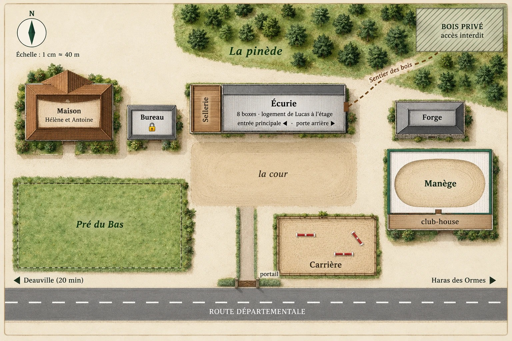
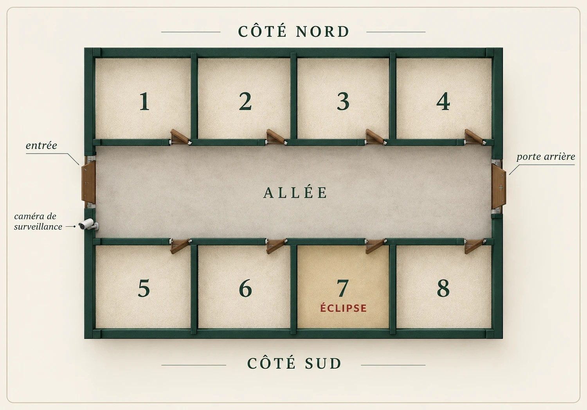

Le Haras des Trois Fers
La Disparition
d'Éclipse
La favorite du Grand Prix a disparu cette nuit.
Vous avez une heure pour la retrouver.
2 à 6joueurs
60 minune heure
★★★facile
La favorite du Grand Prix a disparu cette nuit.
Vous avez une heure pour la retrouver.
Une enquête pour découvrir le pupitre en douceur : tout ce qu'il faut savoir est dans ce livret, et dans le jeu.
| I · L'affaire | La lettre de Camille, votre mission | 3 |
| II · Les gens du haras | Six personnes à interroger | 5 |
| III · Vos rôles | Six talents, six secrets | 7 |
| IV · Le domaine | Le haras et l'écurie | 9 |
| V · Le pupitre du haras | Comment jouer | 11 |
| VI · Le carnet d'enquête | À remplir au crayon | 13 |
On ne montre pas : on raconte. Ni les documents secrets, ni ce que l'on entend au casque. C'est en se parlant que l'on trouve.
Samedi matin, Normandie. Un message vous attendait au réveil.
Samedi, 7 h 15
Mes amis,
Je n'ai pas le temps de vous expliquer longuement : venez au haras, vite. Éclipse a disparu cette nuit. Lucas a trouvé son box grand ouvert à 6 h ce matin, et vide.
Demain, c'est le Grand Prix de Deauville. Elle en était la grande favorite. Hélène est effondrée, tout le monde se regarde de travers… et moi, je ne crois pas une seconde à un simple vol.
À 9 h, l'expert de l'assurance vient signer le constat. Après, l'affaire sera classée et plus personne ne la cherchera. Vous êtes les seuls en qui j'ai confiance. Chacun de vous a un talent : servez-vous-en.
Retrouvez-la. Je vous en supplie.
Camille
P.-S. : ne dites rien à personne de ce que vous trouverez. À personne.
Trois questions, une seule heure.
Une accusation fausse coûte 5 minutes. À la troisième erreur, l'enquête est perdue.
Glissez la carte d'un personnage dans la fente pour l'interroger. Posez un objet sur le plateau pour le lui montrer.
Elle a repris le haras de son père il y a trente ans. Éclipse est sa fierté.
« Ce haras, c'est toute ma vie. »
Il s'occupe des chevaux et loge au-dessus de l'écurie. C'est lui qui a découvert le box vide.
« Je connais chaque cheval par son prénom. »
Votre amie. Elle monte Éclipse depuis quatre ans, et c'est elle qui vous a appelés.
« Elle et moi, on se comprend sans un mot. »
Un personnage seul raconte sa version. Montrez-lui un objet : il réagit, parfois plus qu'il ne le voudrait. Un même objet ne dit pas la même chose à tout le monde.
Venue reconnaître la carrière avant le Grand Prix. Elle a fini trois fois deuxième derrière Éclipse.
« Je n'aime pas perdre. Jamais. »
Revenu de Paris sans prévenir il y a une semaine. Il préfère les casinos aux écuries.
« Les chevaux, c'est le truc de ma mère. »
Il achète et revend des chevaux dans toute l'Europe. Il était dans le coin cette nuit.
« Tout s'achète, il suffit d'y mettre le prix. »
L'ancien palefrenier du haras connaît chaque recoin. Quand vous séchez, glissez sa carte dans la fente : les trois premiers coups de main sont gratuits, les suivants coûtent 2 minutes.
Chacun de vous a un talent, et un document secret. Les six rôles sont toujours tous en jeu.
| Joueurs | 2 | 3 | 4 | 5 | 6 |
|---|---|---|---|---|---|
| Rôles par joueur | 3 chacun | 2 chacun | 2·2·1·1 | 2·1·1·1·1 | 1 chacun |
Utiliser un pouvoir : glissez la carte visée dans la fente, puis posez votre carte Rôle sur le plateau (ou l'inverse). Le pupitre décompte les utilisations.
Vous connaissez les fers de tous les chevaux du haras.
Lire une piste : lors d'un choix de chemin, glissez votre carte pour éliminer une mauvaise option.
Vous savez lire les notes de votre confrère, le Dr Morel.
Vous seul·e pouvez déchiffrer ses carnets de santé.
Vos archives du Courrier Équestre.
Insister : un personnage et votre carte. Il vous fait une confidence au casque, à vous seul·e.
Vous avez eu accès aux comptes du haras.
Expertiser : votre carte et un objet, pour une analyse financière.
Le programme du Grand Prix, et les rumeurs du milieu.
Coup de poker : glissez votre carte seule, juste avant une accusation. Si elle est fausse, pas de pénalité, et une lumière rouge désigne l'élément faux.
Votre fiche sur la nuit du vol.
Vérifier un alibi : un personnage et votre carte ; réponse au casque. Juste après un imprévu raté, votre carte annule la pénalité (1 fois).
Glissez la carte d'un lieu dans la fente pour vous y rendre. Vous y restez jusqu'au lieu suivant.

Le Haras des Trois Fers, vu du ciel. Échelle : 1 cm ≈ 40 m.

Huit boxes, une allée, deux portes.
Il vous dira toujours quand vous servir de quoi. Voici ce que vous trouverez sur la façade.
Commencez par l'écurie, et parlez-vous beaucoup : chaque rôle tient un morceau de la vérité. Notez tout dans le carnet d'enquête des pages suivantes.
À remplir au crayon pendant la partie. Celui-là, vous pouvez le montrer !
| Personne | Alibi pour la nuit | Mobile possible | ? |
|---|---|---|---|
| Hélène Vasseur | |||
| Lucas Bernier | |||
| Camille Roussel | |||
| Victoire de Lancey | |||
| Antoine Vasseur | |||
| Marc Delorme |
| Heure | Ce qui s'est passé |
|---|---|
| 22 h | |
| 0 h | |
| 2 h | |
| 3 h | |
| 4 h | |
| 6 h |
Croisement 1 : ____________
Croisement 2 : ____________
Croisement 3 : ____________
Missions · Mystères · Évasion
Normandie, la veille du Grand Prix de Deauville. Éclipse, la jument favorite, a disparu de son box. Interrogez les gens du haras, fouillez le domaine, servez-vous de vos talents… et retrouvez-la avant que l'affaire ne soit classée.
| La Disparition d'Éclipse | Le Haras des Trois Fers | ★ |
| Le Casse du Siècle | Monte-Carlo 1928 | ★★ |
| La dernière nuit de Lord Edgar | Le Manoir Blackwood | ★★ |
| Désamorçage | Brigade de déminage | ★★ |
| Signal Perdu | Station Kepler-9 | ★★★ |
| Dernier souffle | Sous-marin Narval | ★★★ |
| Banc d'essai | L'Atelier du professeur Lumen | ★ |